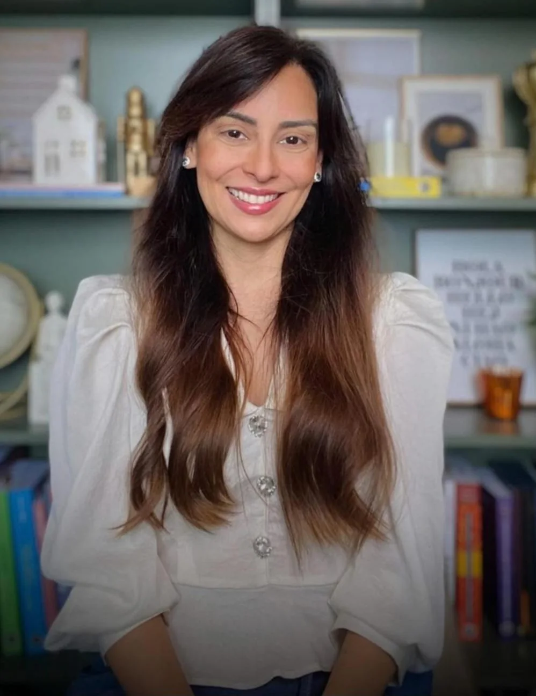
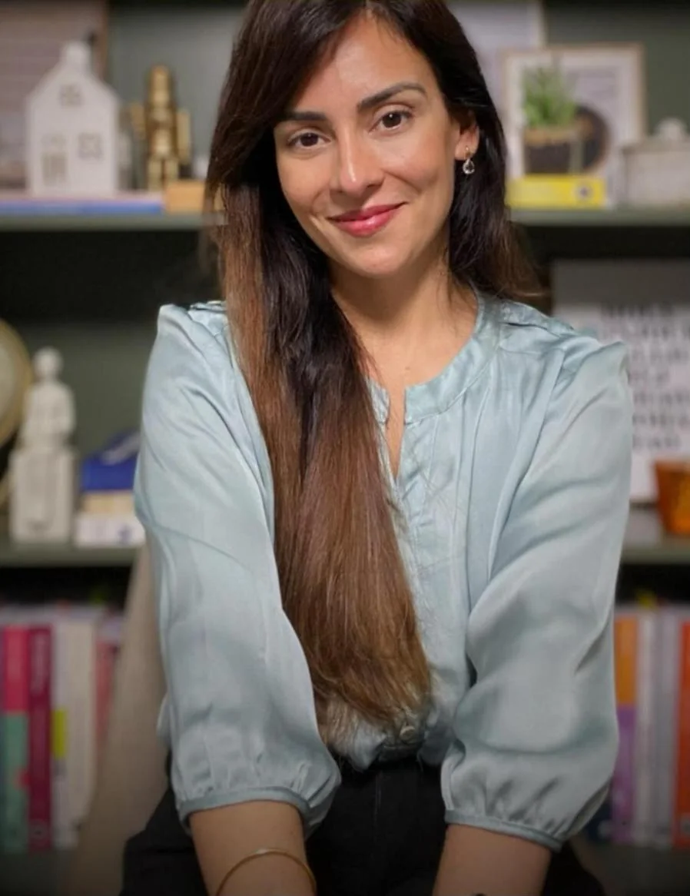
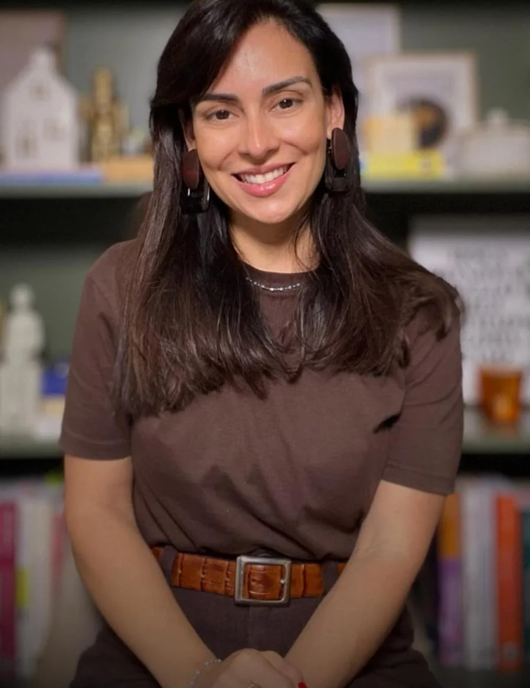
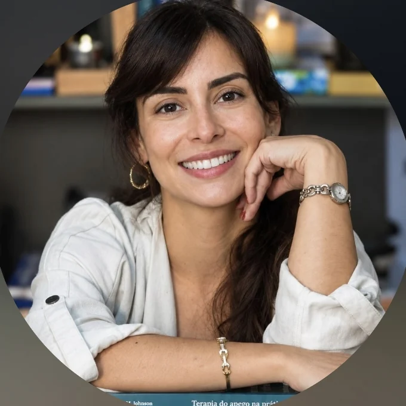

Psicóloga clínica bilíngue
Tatiane Grassi
Psicologia com ciência, curiosidade e vida real.
Terapia Cognitivo-Comportamental e Prática Baseada em Evidências, em atendimentos on-line em português ou em inglês. Para entender o que você sente e treinar, na prática, novas formas de lidar com isso.
CRP 05-88681
TCC · PBE
On-line · PT / EN
- Ansiedade
- Medo de rejeição
- Autonomia emocional
- Arrependimento
- Habilidades sociais
- Flexibilidade cognitiva
- Pensamento não é fato

Do meu jeitoNada de frase pronta: a experiência humana é mais interessante do que isso.
Sobre mim
Uma psicologia que conversa com a ciência e com a sua vida.
Sou a Tatiane Grassi, psicóloga clínica bilíngue, registrada no CRP 05-88681. Trabalho com a Terapia Cognitivo-Comportamental e com a Prática Baseada em Evidências: cada passo da terapia é escolhido a partir do que a pesquisa mostra que funciona e do que faz sentido para você.
Aqui e no Instagram o jeito é o mesmo: falar de psicologia com rigor, mas sem distância. Com perguntas, curiosidade e exemplos da vida como ela é.
01
Ciência
Técnicas com respaldo em pesquisa, não em achismo.
02
Curiosidade
Entender como você pensa, sente e age, sem julgamento.
03
Vida real
O que se constrói na sessão precisa funcionar no seu dia a dia.
Como eu trabalho
TCC e evidências, sem complicação.
Terapia não é só desabafo, e também não é receita pronta. É um trabalho em parceria, com objetivos claros, em que você entende o que mantém o seu sofrimento e aprende a fazer diferente.
TCC
Terapia Cognitivo-Comportamental
Olha para a relação entre o que você pensa, sente e faz. Juntos, identificamos os padrões que alimentam o sofrimento e praticamos formas mais flexíveis e realistas de responder a eles.
PBE
Prática Baseada em Evidências
As decisões clínicas unem três coisas: a melhor evidência científica disponível, a experiência da psicóloga e as suas características, valores e preferências.
O modelo da TCC
Mudar um dos pontos movimenta os outros. É nisso que a terapia trabalha.
1
Acolhimento
Você conta o que te trouxe, no seu ritmo.
2
Entender o caso
Mapeamos juntos o que mantém o problema.
3
Metas combinadas
Objetivos claros, definidos com você.
4
Prática
Exercícios entre as sessões, para a vida real.
5
Autonomia
Você sai com ferramentas para seguir com as próprias pernas.
Temas
O que costuma chegar por aqui
Alguns dos assuntos que aparecem no consultório e nos conteúdos do Instagram. Se o seu não está na lista, ele também tem lugar.
01
Ansiedade e preocupação
Quando a mente vive no "e se?" e não desliga nem na hora de dormir.
02
Medo de rejeição
A necessidade de aprovação que acaba decidindo as suas escolhas por você.
03
Autonomia emocional
Aprender a tolerar a desaprovação e preservar o que é seu.
04
Arrependimento e autocrítica
Olhar o passado com o repertório de hoje, para aprender e não para se punir.
05
Habilidades sociais
Dizer não, pedir o que precisa e se posicionar sem culpa.
06
Pensamentos distorcidos
Examinar evidências em vez de acreditar em tudo o que a mente diz.
No Instagram
Psicologia sem frase pronta.
Conteúdos curtos sobre TCC e comportamento, do jeito que se conversa na vida real.

Você tentaparar de sentir? O que acontece quando a gente tenta empurrar uma emoção para longe.Assistir no Instagram O perigodo otimismoTrocar um pensamento negativo por um positivo, no automático, pode ser tão irrealista quanto o primeiro. O caminho é examinar as evidências.Ler no Instagram

Você aprendeuvivendo O seu passado não tinha o repertório que ele mesmo te deu agora.Assistir no Instagram
Atendimento on-line
De onde você estiver, na língua que preferir.
Sessões por vídeo
Com a mesma ética e o mesmo sigilo do consultório presencial.
Para brasileiros no exterior
Terapia em português, com quem entende a sua cultura, mesmo morando fora.
Sessions in English
Atendimento também em inglês, para quem se sente mais à vontade assim.
Dúvidas
Antes de começar
As perguntas mais comuns de quem está pensando em fazer terapia. Ficou alguma? É só mandar uma mensagem.
Tirar uma dúvidaComo funciona a terapia on-line?
As sessões acontecem por chamada de vídeo, no horário combinado. Basta um lugar reservado, uma boa conexão e, de preferência, fones de ouvido.
O que é TCC e por que "baseada em evidências"?
A TCC trabalha a relação entre pensamentos, emoções e comportamentos. Ser baseada em evidências significa que as estratégias usadas têm respaldo em pesquisa científica e são ajustadas a você.
O atendimento pode ser em inglês?
Sim. Sou bilíngue e atendo em português ou em inglês, inclusive brasileiros que moram fora do país.
Quanto tempo dura a terapia?
Depende dos seus objetivos. Na TCC, as metas são combinadas desde o início e revistas ao longo do processo, para que você acompanhe a própria evolução.
O que eu falar fica entre nós?
Sim. O sigilo é um dever previsto no Código de Ética Profissional do Psicólogo e vale também para o atendimento on-line.
Vamos conversar?
Você não precisa chegar com tudo resolvido.
Uma mensagem já é um começo. Conte um pouco do que está buscando e combinamos o primeiro encontro.
A terapia não substitui atendimento de urgência. Em situação de crise, ligue para o CVV no 188 (24 horas, gratuito) ou para o SAMU no 192.
